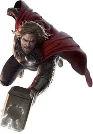

|
Homem de Ferro (Iron Man, em inglês) é um personagem fictício dos quadrinhos publicados pela
Marvel Comics. Sua identidade verdadeira é a do empresário e bilionário Tony Stark, que usa armaduras de
alta tecnologia no combate ao crime. Foi criado em 1963 pelo escritor Stan Lee, o roteirista Larry Lieber, e os desenhistas
Jack Kirby e Don Heck.
O objetivo de seu criador, Stan Lee, era aceitar o desafio de fazer um personagem ser odiado e depois amado pelo público,
assim, criou um dos super heróis mais marcantes de todos os tempos.
|
|
Capitão América é um super-herói de histórias em quadrinhos americanos publicado pela Marvel Comics.
Criado por Joe Simon e Jack Kirby, o primeiro personagem apareceu em Captain America Comics # 1 (março de 1941) da
Timely Comics, antecessora da Marvel Comics. Capitão América foi concebido como um super-herói patriótico que lutou contra
as potências do Eixo na Segunda Guerra Mundial e foi personagem mais popular da Timely Comics durante o período da guerra.
A popularidade dos super-heróis diminuiu após a guerra e os quadrinhos Capitão América foram interrompidos em 1950, com uma volta de
curta duração em 1953. Em 1964, o personagem foi reintroduzido como participante do Universo Marvel.
|
|  |
Thor é um personagem fictício que aparece nas histórias em quadrinhos publicadas pela Marvel Comics.
Baseado no deus Thor da Mitologia Nórdica, ele foi criado por Stan Lee, Larry Lieber e Jack Kirby.
Estreando na Era de Prata dos quadrinhos, o personagem apareceu pela primeira vez em Journey into Mystery #83 (agosto de 1962).
Ele é um membro fundador da equipe de heróis Vingadores.
|
|
O Hulk, por vezes referido como O Incrível Hulk (The Incredible Hulk, no original em inglês)
é um personagem de quadrinhos/banda desenhada do gênero super-herói, propriedade da Marvel Comics, editora pela qual
as histórias do personagem são publicados desde sua criação, nos anos 1960. Concebido pelo roteirista Stan Lee (1922-2018) e
pelo desenhista Jack Kirby (1917-1994), teve sua primeira aparição junto ao público original dos Estados Unidos na revista
The Incredible Hulk n°1, lançada no mercado americano pela Marvel Comics em maio de 1962, um título solo do personagem,
garantindo-lhe o acesso ao que mais tarde seria popularmente conhecido como Universo Marvel dos quadrinhos/banda desenhada.
A partir de então, o Hulk tem aparecido, protagonizando ou não, diversas histórias da editora, se tornando um dos mais visualmente
reconhecíveis da mesma, tendo o universo entorno do personagem se expandido continuadamente ao longo das últimas décadas.
|
|
Viúva Negra (em inglês Black Widow),é uma personagem das histórias em quadrinhos do Universo Marvel,
publicado pela Marvel Comics. Criada por Stan Lee (edição), Don Rico (roteiro) e Don Heck (desenhos),
a personagem apareceu pela primeira vez em Tales of Suspense #52 (abril de 1964). A personagem foi introduzida pela
primeira vez como uma espiã russa, antagonista do super-herói Homem de Ferro. Mais tarde, ela fugiu para os Estados Unidos,
tornando-se uma agente da S.H.I.E.L.D. e membro da equipe de super-heróis Vingadores.
|
|
Gavião Arqueiro (nome original em inglês, Hawkeye) alter-ego de Clint Barton, é um personagem de
quadrinhos americanos da Marvel Comics. Criado por Stan Lee e Don Heck, o herói fez sua primeira
aparição em Tales of Suspense #57 (Setembro de 1964) antes de se juntar aos Vingadores em Avengers #16 (Maio de 1965).
Desde então, Barton tem sido membro proeminente da equipe.
|